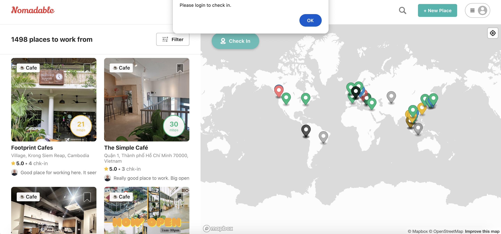
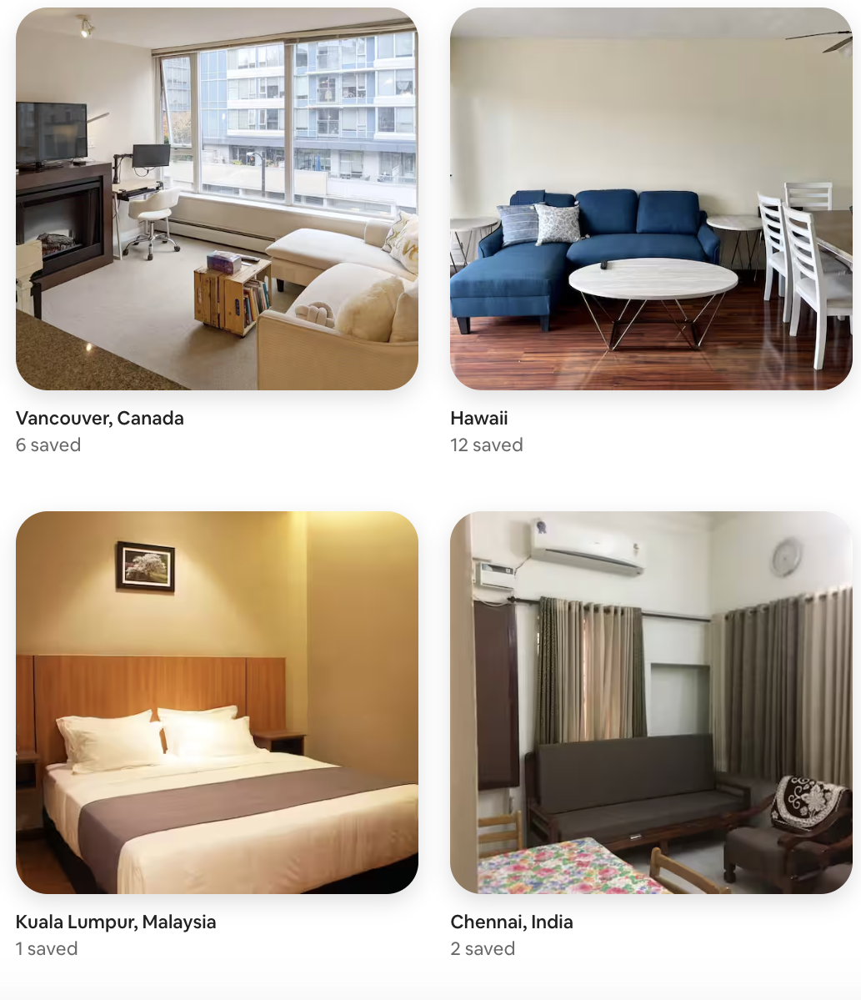
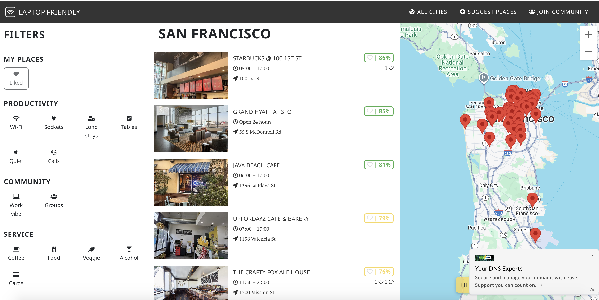
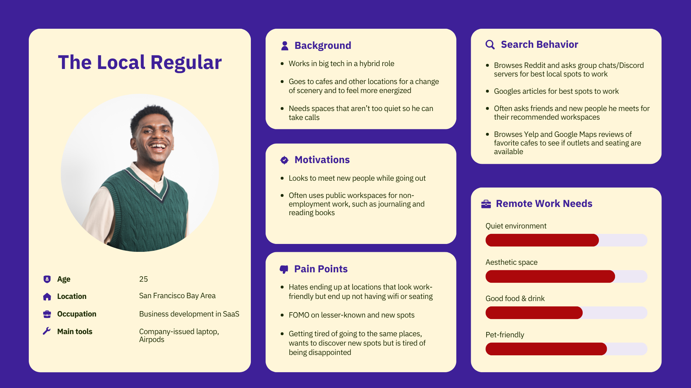
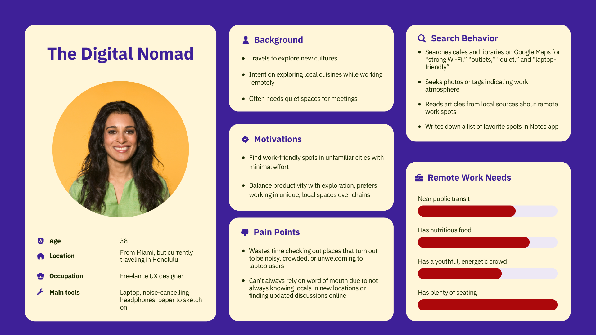
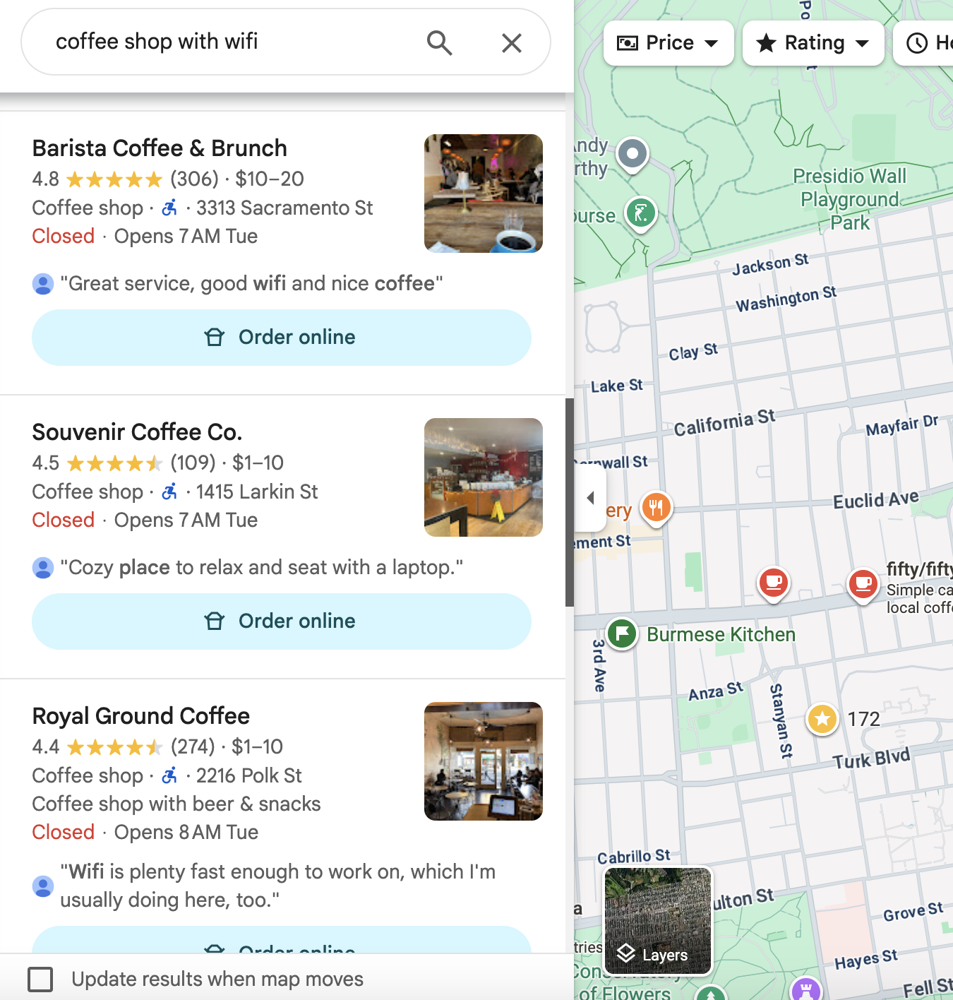
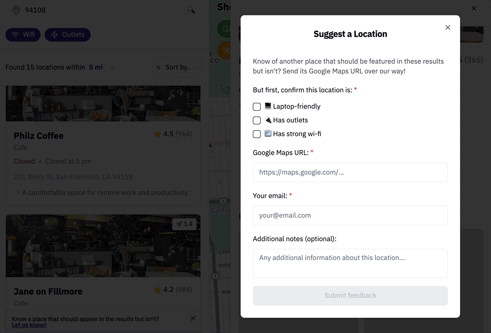
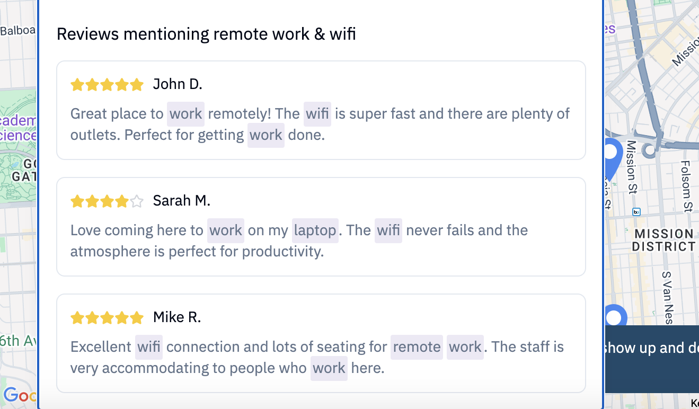
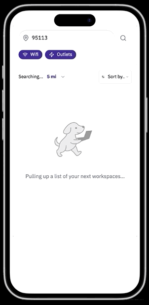

It's nice to get out of the house to get some remote work done. Remote Rover makes it easier to find the right (free) location.
Remote Rover simplifies the search for remote work-friendly spaces by providing a curated, searchable map that displays all work-friendly public locations — not just "cafes with wifi."
Searching "coffee shops with wifi" on Google Maps turns up many clearly work-friendly cafes, but these results are often inaccurate. Users also tend to overlook non-cafes that are just as work-friendly, like food courts, libraries, and hotel lobbies.
Remote Rover simplifies the search for remote work-friendly spaces by providing a curated, searchable map that displays all work-friendly public locations, not just "cafes with wifi." Results are more accurate than Google Maps because users can suggest and take down locations of their choice.
✅ Articles provide deeper detail on a single page rather than scattered across several reviews.
❌ Content isn't always updated and often reflects closed locations. Articles typically lack hours or sufficient photos, forcing reliance on the author's opinion.
✅ A more diverse range of opinions beyond a few authors and editors. Others can share whether locations have closed, or add feedback like "no, that place is definitely NOT quiet!"
❌ Many responses are outdated. Respondents don't always provide hours, photos, or links to Google Maps, Yelp, or websites, requiring additional research.
✅ Mostly accurate, updated results with photos and review snippets verifying that users find the space work-friendly.
❌ No way to remove invalid results beyond leaving your own review. It's difficult to display multiple location categories simultaneously (cafes AND libraries). If nearby cafes are occupied, users must manually search for alternatives.
That should make it easy to find a space, right?
😫 It's after 5pm and hardly any coffee shops are open.
😬 All the coffee shops around you with wifi are too crowded.
😱 You picked an invalid result and now you're at a loud sports bar with a Zoom meeting in 2 minutes 💀
Because Google Maps isn't tailored to remote workspaces, you can't improve these results by reporting them — you can only write a frustrated review, which takes quite a bit of cognitive load. If only there was a more convenient, simpler way to refine these search results.
⚠️ Note: these evaluations can't fully replace user research. I couldn't find much information on usability issues other users have had with these sites, so I'm currently filling in that gap with my own user testing.
❌ Immediately opens with a random list of locations in Southeast Asia — inconvenient since I'm located in California. To check in, you have to log in, which you aren't informed of until clicking the Check In button, inconsistent with the design of most location-based websites such as AirBnB.
❌ The default map view is excessively zoomed out, inconsistent with default map views on other apps with maps, like AirBnB and Google Maps.
✅ Each location features a good-quality photo, a label of the place category, and a review snippet of how work-friendly it is, consistent with Google Maps.
✅ Internet speed is easily visible, making usability more efficient for users traveling to locations where internet speeds are often irregular.
✅ Users can filter spaces by location type (cafe, hotel, public spaces, etc.) to reduce cognitive load and improve efficiency and flexibility.


❌ Based out of Belgrade, Serbia, and uses the 24-hour clock with no way to change it — this alone will cause friction for primarily American, San Francisco Bay Area-based users.
❌ It doesn't label the location's category: whether it's a hotel, cafe, etc.
❌ "Work vibe" and "Groups" filters are unclearly defined.
✅ It aggregates work-friendly spots of all types, including hotels, to give users more options and variety.
✅ While it pulls data from Google Maps, it also collects its own data to further quantify how work-friendly a location is.
✅ Users can refine results with multiple preset filters, adding flexibility and reducing time to find ideal spots.

⭐️ Saluhall is one of my favorite remote workspaces in San Francisco, but because it's a food court, it won't show up if you search "cafes with wifi" — or even "places with wifi." 😠 That means users are missing out on a desirable option, and 🕘 it's open until 8pm, later than the vast majority of nearby cafes, making it a great fallback after 5pm.
😬 Searching "coffee shops with wifi" in San Jose has also turned up far more inaccurate results than in San Francisco. ⏰ Navigating to invalid locations wastes users' time, and traumatized users might feel compelled to spend extra time verifying future results.
To determine which features to implement beyond what the competitors above already offer, I researched typical remote worker needs and concerns through discussion forums, articles, and Google Maps and Yelp reviews of popular and underrated work-friendly locations.
Creating user personas helped me categorize the needs surfaced by that research.
⚠️ Accounting for possible bias: as someone who's worked remotely for years all over the world, I've been both of these personas myself, which may influence my perspective.


I designed each screen in Figma and brought it to life with the AI vibe-coding tool Lovable. The bulk of the code is AI-generated from my prompts and Figma files, but some of it is manually written by me.
✅ More features will be added after substantial usability testing.
It seemed most efficient for users to be able to search for a location right away upon opening the site — reducing friction compared to the user flows of the competitors above, with no need to log in. Like on Google, the screen asks the user for permission to detect and fill in their current ZIP, minimizing the time between landing on the site and viewing results. Users can also erase this to enter any city or ZIP.
Google Maps' algorithms and generative AI won't always be 100% accurate, so users are encouraged to take down inappropriate locations — accounting for technical gaps, improving result validity, and preventing users from wasting time manually verifying or navigating to the wrong location.

Some users may only be in the mood for certain types of work-friendly spaces, like food courts or libraries. They can remove unwanted categories by clearing each tag to refine results while still maintaining multiple location types. Each map pin's color matches the color of its tag for coordination, and users can open each location on Google Maps to view full details and navigate there.
⚠️ Note: the photos and AI summaries are currently placeholders to limit data costs, since location data is being requested from Yelp and Google Maps.


The search results and location details panels are inspired by the design of Google Maps. Each location has an AI-generated summary derived from its Google Maps or Yelp reviews, summarizing how work-friendly the location is to give users immediate verification without manually searching through reviews. The photo section provides additional verification by pulling photos of customers working at the location, falling back to photos of the seating area if work photos aren't available.

To account for locations the algorithm may be erroneously skipping, users always see a dismissible floating banner inviting them to submit a location, and must confirm the submission has characteristics that make it work-friendly. This makes lesser-known and brand-new spaces — which may lack reviews — much more discoverable than on Google Maps.
⚠️ I sadly couldn't figure out how to code this function, so I'm using demo text for now.

Knowing that not everyone trusts generative AI's accuracy, each location uses APIs and an algorithm to display selected reviews from Google Maps and Yelp, pulled from users specifically saying it's work-friendly.

It seems likely that users will most often search for workspaces on mobile, waiting until they actually arrive to pull out a desktop. The original Figma designs were actually mobile-only — I later adapted the code for desktop.


I'm currently recruiting a diverse range of participants who often work remotely in public, including students, remote workers, entrepreneurs, and unemployed jobseekers. Testing takes the form of a survey followed by moderated sessions.
In order to proceed with human-centered design, I won't build out more complex features until I gain more insight from user needs.
1. Before each session, I'll share any questions I have with the user about their survey responses, and ask them to review the competitor sites and Google Maps to assess usability issues.
2. On Remote Rover, the user will be instructed to locate an ideal workspace in their preferred location that they have NOT worked at yet.
3. I'll pay attention to whether they have any needs the design currently doesn't address, such as a missing filter, noting queries like "is there a way to…" and other struggles.
4. Since their search results will have some invalid options due to a current lack of user feedback, I'll ask them to report those options and suggest valid ones with the forms depicted above.
5. At the end of the session, I'll ask how comfortable they are with their decision given the information provided, and what other features would make them feel more confident in their selection.
6. After the session, I'll ask how it felt using Remote Rover overall — would they use it in the future to find workspaces, and would they recommend it to others?